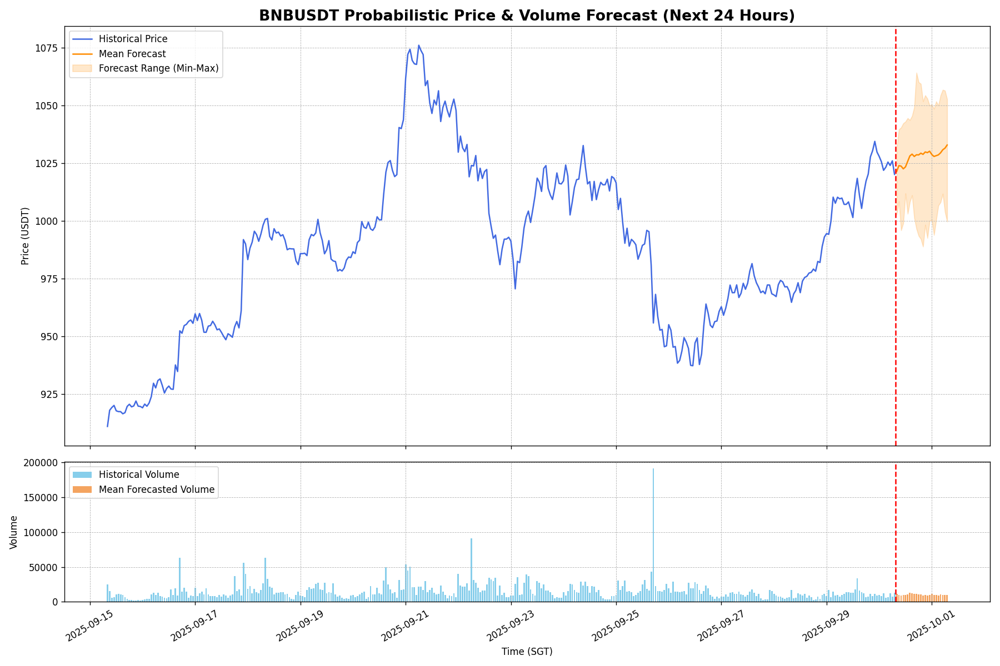

Upside Probability (Next 24h)
50.0%
The model's confidence that the price in 24 hours will be higher than the last known price.
Volatility Amplification (Next 24h)
96.7%
The probability that predicted volatility over the next 24h will exceed recent historical volatility.
24-Hour Probabilistic Forecast
The chart below shows the historical price (blue) and the probabilistic forecast (orange). The orange line is the mean of multiple Monte Carlo simulations, and the shaded area represents the full range of predicted outcomes, indicating forecast uncertainty.
